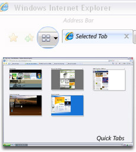
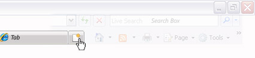

Просматривайте страницы, делайте покупки и поисковые запросы сразу на нескольких веб-узлах


Просмотр нескольких веб-страниц
Запустите обозреватель Internet Explorer 7. Домашняя страница пользователя открывается на первой вкладке. Для одновременного просмотра других узлов нажмите на панели инструментов кнопку создания новой вкладки и в адресной строке введите адрес узла, который нужно посетить. Ваша домашняя страница остается открытой на первой вкладке. Закрыть вкладки так же легко, как и открыть их. Нажмите кнопку закрытия , которая находится в правой части выбранной вкладки.
Запустите обозреватель Internet Explorer 7. Домашняя страница пользователя открывается на первой вкладке. Для одновременного просмотра других узлов нажмите на панели инструментов кнопку создания новой вкладки и в адресной строке введите адрес узла, который нужно посетить. Ваша домашняя страница остается открытой на первой вкладке. Закрыть вкладки так же легко, как и открыть их. Нажмите кнопку закрытия , которая находится в правой части выбранной вкладки.
Если открыто несколько вкладок, для поиска нужного узла или закрытия ненужного пользуйтесь значком быстрых вкладок .